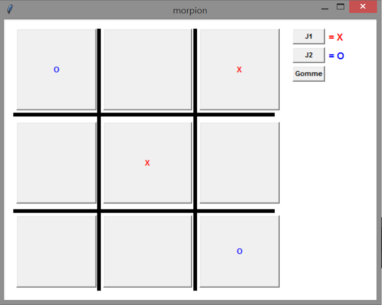
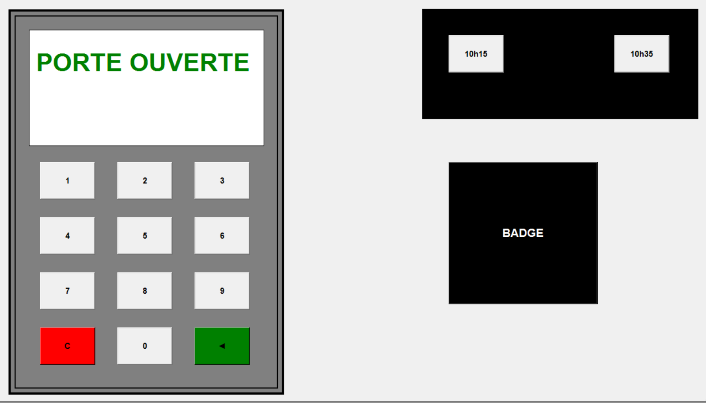
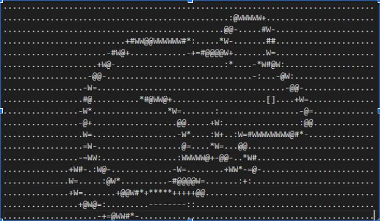
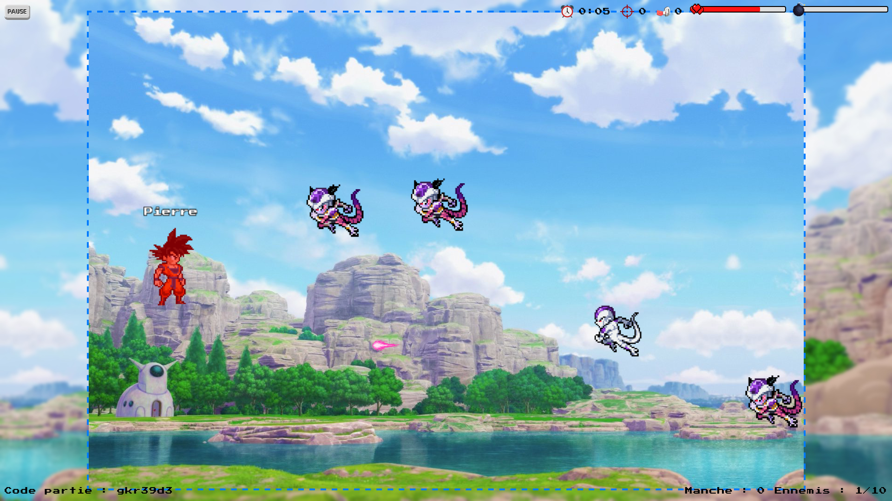

Pierre Planchon
Mon intérêt pour l'informatique a débuté au collège en technologie, a grandi en classe de Seconde avec la SNT, et s'est enfin précisé sur mes dernières années de lycée avec la spécialité NSI qui m'a permis de découvrir la programmation, le développement web etc. Aujourd'hui, étudiant en 2e année de BUT informatique à l'IUT de Lille, je cherche à développer mes compétences dans ce domaine, que ce soit en approfondissant ma connaissance des techno. que j'ai déjà étudié, ou en en découvrant des nouvelles.
Java
HTML/CSS
SQL/Postgresql
Python
Bash
Linux
Git
Visual Studio Code
WordPress
Anglais (B1)
Espagnol
Aujourd'hui
Depuis Septembre 2023, Douai
Emploi fixe, chaque samedi matin (hors vacances et jours fériés)
Animateur d'un club informatique avec des jeunes (primaires et collégiens).
Depuis Avril 2022, Douai
Emploi régulier, chaque vacances scolaires.
Animateur en ALSH (MJC).
Images cliquables pour accéder aux projets.



